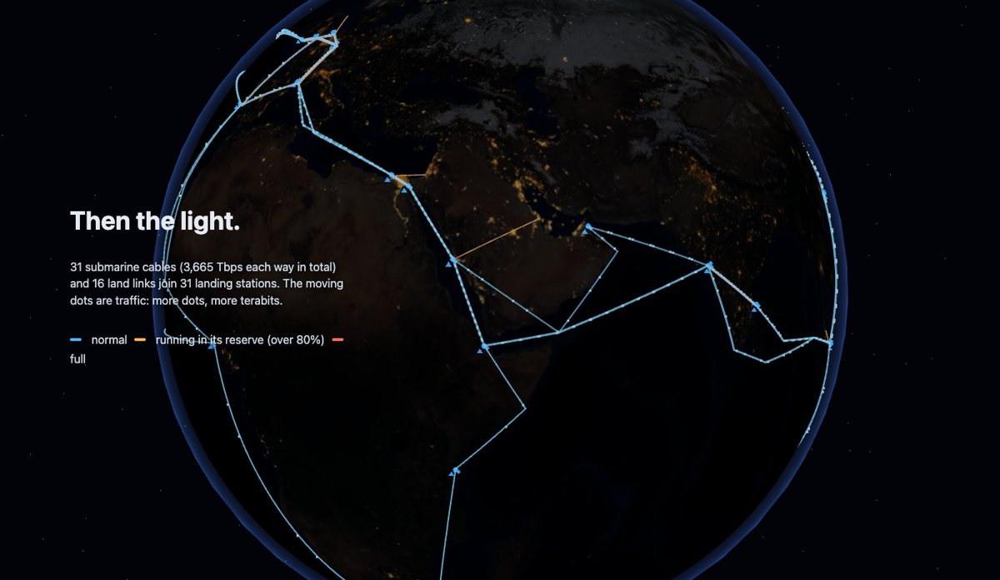
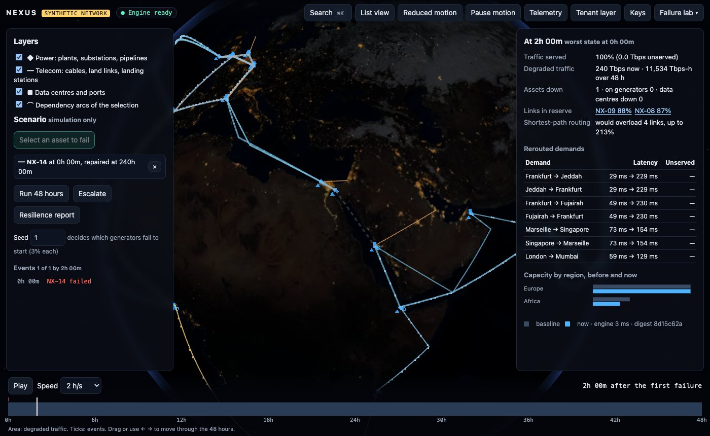
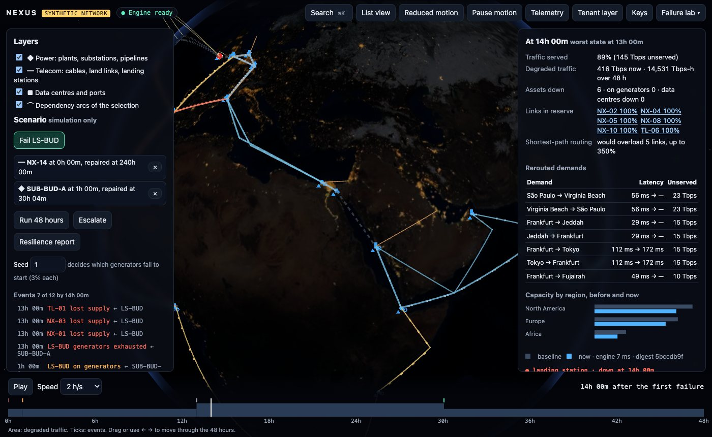
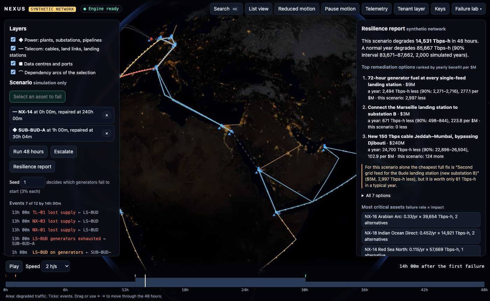
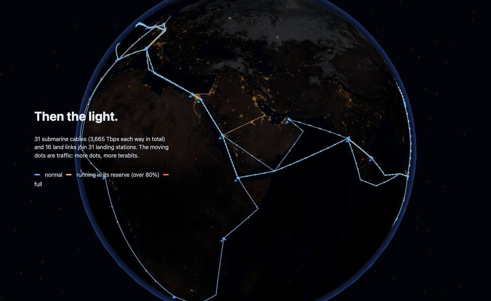

TypeScript · three.js · network flows · 2026-10
What Breaks When One Cable Is Cut?
A motion-first infrastructure dependency map: a synthetic network of 31 submarine cables, landing stations, substations and data centres on a dark Earth. Cut the Red Sea cable and traffic reroutes into the West Africa cables' reserve; a substation failure in Bude then strands 145 Tbps. A Monte Carlo over 1,000 paired years ranks the fixes: $9M of generator fuel beats a $240M cable per dollar.

Built from blueprint 07 of a written build book (Volume V, motion-first products) as one vertical slice. The network is synthetic: the places are real coastal cities so the map reads correctly, but every cable, station, substation, data centre, owner, capacity, route and dependency is invented; it is not a map of real infrastructure. Failure rates are of realistic order, not fitted to any operator's history. Not built: real cable data, the ten-service split, graph and spatial databases, Kafka, ClickHouse, Terraform and cloud deployment, single sign-on, enterprise asset import.
01 — The problem
Digital services run on a physical network: cables on the sea floor, the stations where they land, the substations that power those stations, the plants and pipelines behind them. Operators, insurers and governments need to know what one failure does to the rest. When a cable is cut, where does the traffic go, what runs hot, and which cheap fix would stop the next failure from turning into an outage?
The build book's rule for this volume is that the public website is the product: motion has to show state and causality, and a visitor learns the system by using it. Blueprint 7 of ten, built as its demo scenario end to end.
02 — What I built
A Next.js site that runs entirely in the browser on synthetic fixtures, plus a Fastify API on PostgreSQL behind the same interface, started by one docker compose up.
- A synthetic network over 31 real coastal cities: 31 cables, 16 land links, 44 substations, 31 plants, 6 pipelines, 41 data centres, 17 ports and 380 dependencies.
- A cascade engine over time, with redundancy groups, backup generators, repairs and the cause of every failure.
- Traffic routing: capacity-aware min-cost flow with an 80% engineering target, compared with plain shortest-path routing.
- An escalation search for the worst next facility failure.
- Resilience analysis: a 2,000-year Monte Carlo, criticality, minimum cuts between regions, and seven remedies ranked on paired years.
- A motion layer where moving dots carry traffic and critical links breathe slowly, with reduced motion, pause, deep links, list view, a failure lab and a tenant's private layer.
03 — How it was built
- 01
A network with hidden single points of failure
Each city gets a landing station, a plant, one or two substations and possibly data centres and a port. Big metros have two substations that also feed each other; small landing towns have one substation feeding everything. Cables need power at both landings, data centres need their landing station's uplink, plants need their pipeline's fuel. Demand is 1,265 Tbps across 48 directed city pairs, and the baseline serves all of it with no link above 80%.
- 02
Failure over time, not a switch
An asset needs every one of its dependency groups, and a group holds while up members carry at least a quarter of its weight, so one of two feeds is enough. A station that loses grid power runs on generators (3% fail to start, decided by a seed) until its fuel runs out, then fails and takes what depends on it. Each moment is the fixed point of that rule, which also handles substations that feed each other. Same failures and seed give the same events, which the tests and the crash recovery both check.
const lack = missing(m, id, (x) => state.get(x) !== "down"); const backupOk = isPower && a.backupHours > 0 && !genFails(id) && t - since < a.backupHours; state.set(id, backupOk ? "backup" : "down"); - 03
Cut the Red Sea cable
NX-14 carries 210 Tbps each way between Suez and Jeddah. Without it, capacity-aware routing still serves everything by moving Europe–Asia traffic onto the West Africa route: NX-09 runs at 88% and NX-08 at 87%, inside their 20% reserve, and Frankfurt to Jeddah goes from 29 ms to 229 ms. Plain shortest-path routing would have pushed four links to 180–212% of capacity. After any single cable cut, a test checks that no link exceeds 100% and that traffic is conserved at every node.
- 04
Escalate to the worst next failure
The engine tries each of the 19 substations that are a landing station's only grid feed, on top of the cut, and picks the one that degrades the most traffic: Bude substation A, ahead of Lisbon and Lagos. Bude's station runs on generators for 12 hours, goes dark at hour 13 and takes two transatlantic cables and the London land link with it. 145 Tbps cannot be carried and six links are full. Over 48 hours degraded traffic rises from 11,534 to 14,531 Tbps-hours.
- 05
Which fix is worth the money
Seven remedies are run on this scenario and on 1,000 simulated years where the same random failures hit every variant, so differences come with tight intervals. The cheapest full fix for this scenario is a second feed at Bude ($5M), but it saves only 61 Tbps-hours in a normal year because that substation rarely fails. 72-hour generator fuel at every single-feed station ($9M) saves 2,494 a year, 277 per $M, first by value; connecting Marseille's station to its second substation ($3M) comes next at 224 per $M; a new Jeddah–Mumbai cable ($240M) saves the most in total, 24,700, at 103 per $M. The case for a fix depends on whether you plan for this scenario or for the year.
const diff = baseMc.perYear.map((x, y) => x - mc.perYear[y]); // paired by year const annualReduction = mean(diff), ci90 = annualReduction ± 1.645 * sd(diff) / sqrt(years); - 06
Motion that carries state
Dots travel along each link in the direction of its traffic, and there are more of them where there is more traffic. A dashed grey line is down, amber is running in its reserve, red is full, and the most critical links breathe slowly (0.1–0.6 Hz) so criticality is not shown by colour alone. A scenario is computed in a Web Worker before anything animates, so playback only moves the clock through precomputed states. With reduced motion nothing travels and every number stays.
- 07
Private layers and a crash that recovers
Through the API, a telecom tenant sees its own private Marseille–Lisbon route and edge site; an insurer tenant sees only the shared network, gets 404 if it tries to fail the private route, and the database refuses its writes into another tenant's layer. In the failure lab the simulation engine can be crashed mid-run: the page notices, restarts it and replays the scenario from its inputs to the same digest.
04 — Results
The demo. After the cut, the West Africa route runs in its reserve while all traffic is still served:

Hour 14 after the escalation: Bude is dark, 145 Tbps unserved, six links full:

The resilience report:

| $M | Per year | Scenario | |
|---|---|---|---|
| Generator fuel | 9 | 2,494 | 2,997 |
| Marseille feed | 3 | 671 | 0 |
| Jeddah–Mumbai | 240 | 24,700 | −124 |
| Bude feed | 5 | 61 | 2,997 |
The opening chapter that reveals the cables:

Checks. After every single cable cut no link exceeds capacity and traffic is conserved at every node. Max-flow equals min cut; min-cost flow matches a hand-solved case. Same failures and seed replay identically. A million-edge synthetic graph builds and propagates in 2.4 s. The other tenant cannot see, fail or write the private layer. Coverage of the domain and motion code: 99% of statements.
Performance. 60 FPS on a real GPU with every layer and traffic dot on; a 48-hour scenario takes 5 ms in the worker. The API on one process: 2,386 reads a second at p95 17.5 ms, and 202 full scenario runs a second at p95 79 ms.
05 — What I'd do next
- Route all demands jointly (a multi-commodity LP) to see how far the sequential heuristic is from the optimum under stress.
- Fit failure rates and repair times to a published fault history, so the yearly figures mean more than the settings behind them.
- Let a tenant upload its own assets and dependencies, with validation, instead of a seeded private layer.
- Model generator refuelling and repair crews as limited resources, which is where long outages are actually decided.